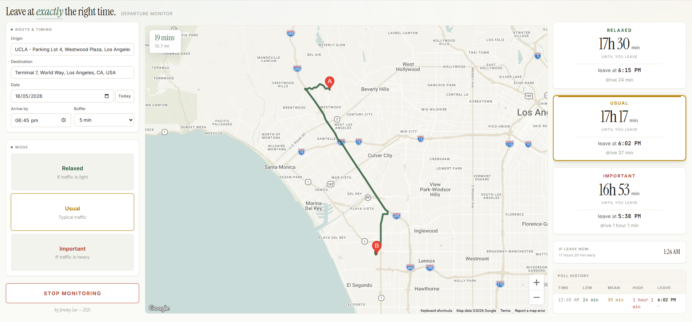

Google Routes API, three traffic models
Google Maps tells you how long the drive takes if you leave now, plus a range like "typically 22 to 50 min", and leaves the decision to you. This app takes an origin, a destination and an arrival time, asks the Routes API about departures inside your likely window, and counts down to the latest safe departure at three levels of risk. It keeps polling while you get ready and sends a notification when it is time to go.
Same trip, three answers 37 minutes apart
Each bar is the drive Google expects under one traffic model, ending at the 6:40 PM cutoff.
Readout
The risk levels come from Google. The Routes API takes a
trafficModel parameter with three values, and the app sends
the same request once with each: OPTIMISTIC for Relaxed,
BEST_GUESS for Usual, PESSIMISTIC for
Important. The spread between the answers is the "typically X to Y min"
range the Maps app shows, returned as numbers.
Relaxed is for lunch with a friend who is always late; Important is for a flight or an interview, where arriving early costs little. All three stay on screen because the gap between them is information. On a calm route they land within a few minutes of each other; on the 405 at rush hour they are more than half an hour apart.

The Routes API ignores trafficModel unless
routingPreference is TRAFFIC_AWARE_OPTIMAL. It
returns no error, only the same duration for all three models, and the
answer looks plausible.
travelMode: 'DRIVE', routingPreference: 'TRAFFIC_AWARE_OPTIMAL', trafficModel: trafficModel, departureTime: departureDate.toISOString(),The bug that took longest to find. Request body from fetchOneRouteWithModel
Sampling
The simple version would poll "how long is the drive right now" every few minutes. At 5:00 PM, for a 6:00 PM departure, that describes the 405 at 5:00, which can be very different from the 405 at 6:00.
So the app samples future departures. On Start it sends one anchor request for a departure 20 minutes before the arrival target. The anchor's duration sizes a departure window that ends at the target minus the buffer and starts the anchor duration plus 15 minutes earlier. Each poll queries the two ends of that window and, unless one of them is within a minute of now, a third departure for now, each with all three traffic models. With under 25 minutes to the target it asks only about now. Every sample's low and high are then widened to the lowest low and highest high of the whole poll, so a window that straddles the start of rush hour reads as uncertain.
The planner below runs that schedule, using the constants and the cadence rule from the app's source, for a trip you set.
Start two hours before arrival and the app polls 13 times before you leave
Assumes the drive time holds steady at your Usual estimate, so the leave-by time stays put.
Each poll also goes into a history table with the low, mean and high durations and the resulting leave-by time, so you can see whether the recommendation is still moving.
Build
OPTIMISTIC, BEST_GUESS and PESSIMISTICroutingPreference: TRAFFIC_AWARE_OPTIMALlocalStorageLimitations
You need your own Google Maps API key with four APIs enabled, pasted into the HTML file, because nothing is hosted. The article estimates a poll at about $0.05 of Routes API usage and a trip at 5 to 15 polls, so 50 cents to a dollar per trip at May 2026 prices.
The forecast is Google's. If the pessimistic model misses a crash that has not happened yet, the app misses it too; what it improves is the decision about when to leave.
The layout is built for a desktop browser. Below 1080px the three columns stack into one long page, with no phone-specific design. It also depends on a browser tab staying open, and a locked phone pauses the JavaScript. It handles driving only, one destination at a time.
More
The article covers the setup steps, the interface choices and the features I would add next: calendar integration, saved routes, multi-stop trips and transit.